기계설계산업기사 (2008-05-11 기출문제)
1과목: 기계가공법 및 안전관리
1. 보링 머신에서 구멍을 가공할 때 사용하는 절삭 공구는?
- 밀링커터
- 다이스
- 엔드밀
- 보링 바이트
(정답률: 65%)

2. 밀링작업에 있어서 직접 분할법(direct indexing method) 중 불가능한 분할 수는?
- 2
- 3
- 5
- 24
(정답률: 71%)
3. 다음과 같은 숫돌의 규격표시에서 “L"이 의미하는 것은?
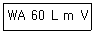
- 입도
- 조직
- 결합제
- 결합도
(정답률: 71%)
4. TC, TiC, TaC등의 탄화물 분말을 Co 나 Ni 분말과 혼합하여 1400℃ 이상의 고온으로 가열하면서 프레스로 소결 성형한 공구재료는?
- 주조합금
- 초경합금
- 시효경화합금
- 합금공구강
(정답률: 79%)
5. 숫돌바퀴를 다루는데 유의사항 중 틀린 것은?
- 연삭 숫돌을 보관할 때는 목재로 된 보관함에 보관한다.
- 숫돌바퀴를 굴리거나 쓰러뜨리지 않는다.
- 쇠 해머로 두드려 음향 검사를 한다.
- 제조 후 사용 회전수의 1.5 ~ 2배의 속도로 회전시켜 안정성 검사를 한다.
(정답률: 75%)
6. 호빙머신에서 제작되는 기어 피치의 정밀도는 특히 어느 것에 의해 좌우되는가?
- 컬럼의 정밀도
- 웜 및 웜기어의 정밀도
- 호브 헤드의 정밀도
- 베드 및 안내면의 정밀도
(정답률: 34%)
7. 다음 중 마이크로미터(micrometer)의 측정면에 대해 평면도 검사가 가능한 기기로 가장 적합한 것은?
- 정반
- 게이지 블록
- 옵티컬 플랫
- 다이얼 게이지
(정답률: 72%)
8. 선반작업에서 구성인선을 감소시키기 위한 방법으로 옳은 것은?
- 윤활성이 좋은 절삭유제를 사용한다.
- 공구의 경사각을 작게 한다.
- 절삭속도를 작게 한다.
- 절삭깊이를 크게 한다.
(정답률: 75%)
9. 연삭가공 중에 발생하는 떨림의 원인으로 가장 관계가 먼 것은?
- 숫돌의 결합도가 너무 클 때
- 숫돌축이 편심져 있을 때
- 숫돌의 평행상태가 불량할 때
- 습식 연삭을 할 때
(정답률: 72%)
10. 지름4cm인 탄소강을 밀링가공 시 절삭속도 v=62.8m/mim이다. 커터 지름이 2Cm일 때 적당한 회전수는 약 몇 rpm인가?
- 1000
- 1500
- 1750
- 2000
(정답률: 38%)
11. 다음 공작기계 중에서 직립 셰이퍼라고도 하며, 공구는 상하 직선 왕복운동을, 테이블은 수평면에서 직선 또는 원운동을 하면서 주로 키홈 또는 스플라인 등을 가공하는 공작기계는?
- 선반(lathe)
- 밀링 머신(milling machine)
- 슬로터(slotter)
- 원통 연삭기(cylindrical grinding machine)
(정답률: 68%)
12. 밀링머신의 부속장치에 관한 설명으로 틀린 것은?
- 슬로팅 장치 : 밀링머신의 컬럼에 장치하여 주축의 회전운동을 공구대의 직선왕복운동으로 변화시킨다.
- 분할 장치 : 일감을 필요한 등분이나 각도로 분할 할 수 있는 장치로서, 분할대라 한다.
- 래크 절삭 장치 : 밀링머신의 컬럼에 부착하여 사용하며, 래크 기어를 절삭할 때 사용한다.
- 회전 테이블 : 수평방향의 스핀들 회전을 기어에 의해 수직방향으로 전환시키는 장치이다.
(정답률: 61%)
13. 스프링이나 기어와 같이 반복 하중을 받는 기계부품에 소형강구 등을 표면에 고속으로 분사시켜 기계적 성질을 향상시키는 가공법은?
- 액체 호닝
- 쇼트 피닝
- 버니싱
- 전해연삭
(정답률: 59%)
14. 절삭유로서 구비해야 한 조건이 아닌 것은?
- 화학적 변화가 클 것
- 마찰계수가 작은 것
- 유막의 내압력이 높은 것
- 산화나 열에 대하여 안전성이 높을 것
(정답률: 90%)
15. 트랜스퍼 머신(Transfer machine)은 다음 중 어디에 속하는가?
- 범용 공작기계
- 전용 공작기계
- 만능 공작기계
- 단능 공작기계
(정답률: 37%)
16. 다음 중 비교 측정기에 속하는 것은?
- 강철자
- 다이얼 게이지
- 마이크로미터
- 버니어 갤리퍼스
(정답률: 72%)
17. CNC의 서포시스템 제어방법에서 피드백 장치의 유뮤와 검출 위치에 따라 4가지 방식이 있다. 다음 중 4가지 방식에 속하지 않는 것은?
- 개방회로 방식
- 복합서보 방식
- 폐쇄회로 방식
- 단일회로 방식
(정답률: 59%)
18. 공구를 안전하게 취급하는 방법 중 틀린 것은?
- 모든 공구는 작업에 적합한 공구를 사용하여야 한다.
- 공구는 사용 후 공구함에 보관한다.
- 공구는 기계나 재요 위에 놓고 사용한다.
- 불량 공구는 반납하고, 함부로 수리해서 사용하지 않는다.
(정답률: 88%)
19. 다음 그림은 밀링에서 더브테일 가공도면이다. X의 치수로 맞는 것은?
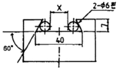
- 23.608
- 25.608
- 22.712
- 18.712
(정답률: 37%)
20. 정을 사용하는 가공에 있어서 해머 사용시 주의사항 중 잘못 된 것은?
- 따내기 가공시 보호 안경을 착용토록 한다.
- 작업 전 두위 상황을 확인하고 눈은 해머를 보며 작업한다.
- 자루가 불안정한 것은 사용하지 않는다.
- 처음에는 가볍게 때리고, 점차 힘을 가하도록 한다.
(정답률: 65%)
2과목: 기계제도
21. 그림과 같이 가공된 축의 테이퍼값은 얼마인가?
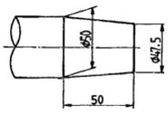
- 1/5
- 1/10
- 1/20
- 1/40
(정답률: 63%)
22. 보기 도면에서 드릴 구멍이 시작에서 끝나는 부분까지 거리인 A 부분의 치수는 몇mm 인가?
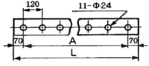
- 1320
- 1200
- 2760
- 2880
(정답률: 66%)
23. 보기와 같은 3각법으로 정투상한 정면도와 평면도에 대한 우측도로 올바르게 나타낸 것은?
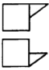
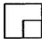
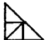
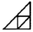
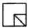
(정답률: 66%)
24. 다음 V벨트의 종류 중 단면의 크기가 가장 작은 것은?
- M형
- A형
- B형
- E형
(정답률: 69%)
25. 기준 B(직선 또는 평면)에 대한 지정길이 100mm에 대하여 평행도가 0.⑤mm의 혀용값을 가지는 것을 바르게 나타낸 것은?
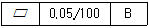
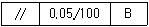
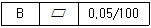
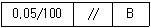
(정답률: 72%)
26. 도면 부품란에 재질이 KS 재료기호 "GC 250"으로 표시된 재질 설명으로 맞는 것은?
- 가단주철, 인장강도 250 N/mm2
- 가단주철, 인장강도 250 kgf/mm2
- 회주철, 인장강도 250 N/mm2
- 회주철, 인장강도 250 kgf/mm2
(정답률: 48%)
27. 일반 구조용 압연강재의 KS 기호인 것은?
- SS490
- SM490
- SW490
- SP490
(정답률: 71%)
28. KS 규격에서 보기와 같은 부등변 ㄱ형강의 표시방법이 올바르게 된 것은? (단, A와 B는 형강의 높이와 폭이고, t는 두께이며, ℓ은 형강의 길이이다.)
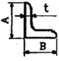
- L A×B×t-l
- L A×t-l
- L A×B×l-t
- L t×A-l
(정답률: 89%)
29. 다음 중 가는 실선의 용도를 잘못 사용하고 있는 것은?
- 투상도의 어느 부분이 평면이하는 것을 나타내기 위해 가는 실선으로 대각선을 그렸다.
- 단면한 부의의 해칭선을 가는 실선으로 그렸다.
- 가공 전이나 가공 후의 모양을 가는 실선으로 그렸다.
- 물체 내부에 회전 단면을 가는 실선으로 그렸다.
(정답률: 54%)
30. 도면에서 표면의 줄무늬 방향 지시 그림 기호 M은 무엇을 뜻하는가?
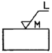
- 가공에 의한 커터의 줄무늬 방향이 기호를 기입한 그림의 투영면에 비스듬하게 두 방향으로 교차
- 가공에 의한 커터의 줄무늬가 기호를 기입한 면의 중심에 대하여 거의 동심원 모양
- 가공에 의한 커터의 줄무늬가 기호를 기입한 면의 중심에 대하여 거의 방사 모양
- 가공에 의한 커터의 줄무늬가 여러 방향으로 교차 또는 무방향
(정답률: 82%)
31. M20 3줄 나사에서 피치가 1.5이면 리드(Lead)는 몇 mm인가?
- 1.5
- 2.5
- 3.5
- 4.5
(정답률: 78%)
32. 물체의 경사면을 실제의 모양으로 나타내는데 가장 적합한 투상도는?
- 관용 투상도
- 보조 투상도
- 회전 투상도
- 부분 투상도
(정답률: 69%)
33. 제3각 정투상도로 투상된 보기와 같은 정면도와 우측면도이다. 평면도로 적합한 것은?
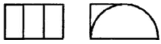
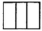
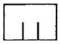
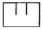
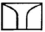
(정답률: 55%)
34. 베어링 호칭 번호에 있어서 구름 베어링의 안지름이 25mm일 때 실제 안지름 대신에 표시하는 베어링의 안지름 번호는?
- 00
- ⑤
- 25
- 50
(정답률: 76%)
35. 다음 중 도면이 전체적으로 치수에 비례하지 않게 그려졌을 경우에 표시 방법으로 올바른 것은?
- 치수를 적색으로 표시한다.
- 치수에 괄호를 한다.
- 척도에 NS로 표시한다.
- 치수에
 표를 한다.
표를 한다.
(정답률: 78%)
36. 다음 KS 용접 기호 중 현장 용접을 뜻하는 것은?
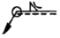
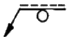
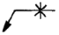
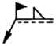
(정답률: 82%)
37. 보기와 같이 지시된 표면의 결 기호의 해독으로 올바른 것은?
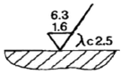
- 제거 가공 여부를 문제 삼지 않을 경우이다.
- 최대높이 거칠기 하한값이 6.3μm이다.
- 기준길이는 1.6μm이다.
- 2.5는 컷오프 값이다.
(정답률: 71%)
38. 보기와 같은 입체도를 제3각법으로 정투상한 투상 도면으로 올바르게 나타낸 것은?
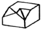
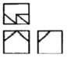
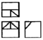
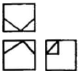
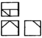
(정답률: 75%)
39. 2줄 M 50×3은 무엇을 나타내는가?
- 나사의 유효 지름과 수량
- 나사의 호칭 지름과 피치
- 나사의 호칭 지름과 등급
- 나사의 유효 지름과 산수
(정답률: 79%)
40. 모양 및 위치공차 식별기호 표시에서 최대 실체 공차방식의 기호는?
- Ⓐ
- Ⓑ
- Ⓜ
- Ⓟ
(정답률: 67%)
3과목: 기계설계 및 기계재료
41. 다음 금속 중 가장 무거운 것은?
- Al
- Mg
- Ti
- Pb
(정답률: 52%)
42. 황동에 관한 설명이 올바른 것은?
- 황동이란 Cu-Pb계 합금으로 공기 중에서 산화가 안되고 황금색이며, 고급재료로 사용된다.
- 황동이란 Cu-Zn계 합금으로서 7:3 황동, 6:4 황동이 널리 알려져 있다.
- 황동이란 Cu-Si계 합금으로서 내식성, 내마모성이 좋고 가격이 싸서 많이 사용되고 있다.
- 황동이란 Cu-Sn계 합금으로서 강력하므로 기계 재료로 많이 사용되고 있다.
(정답률: 80%)
43. 아연을 소량 첨가한 황동으로 빛깔이 금색에 가까워 모조금으로 사용되는 것은?
- delta metal
- hard brass
- muntz metal
- tombac
(정답률: 76%)
44. 탄소강에 함유되어 있는 원소 중 강도와 고온 가공성을 증가시키고 주조성과 담금질 효과를 향상시키며, 적열 메짐을 방지하는 것은?
- 인
- 규소
- 황
- 망간
(정답률: 58%)
45. 0.8%C 이하의 아공석강에서 탄소함유량 증가에 따라 기계적 성질이 감소하는 것은?
- 경도
- 항복점
- 인장강도
- 연신율
(정답률: 68%)
46. 다공질 재료에 윤활유를 흡수시켜 계속해서 급유하지 않아도 되는 베어링 합금은?
- 켈밋
- 배빗메탈
- 오이라이트
- 루기메탈
(정답률: 59%)
47. 구리의 성질을 설명한 것이다 틀린 것은?
- 화학적 저항력이 적어 부식이 잘 된다.
- 아름다운 광택과 귀금속적 성질을 가지고 있다.
- 전연성이 좋아 가공하기 쉽다.
- 전기 및 열 전도도가 높다.
(정답률: 70%)
48. 일반적인 주철의 특징을 설명한 것으로 틀린 것은?
- 주조성이 우수하다.
- 복잡한 형상도 쉽게 제작할 수 있다.
- 가격이 싸고 널리 사용된다.
- 소성변형이 쉽다.
(정답률: 53%)
49. 황동에 납(Pb)을 첨가하여 절삭성을 향상시킨 것은?
- 쾌삭황동
- 강력황동
- 문츠메탈
- 톰백
(정답률: 71%)
50. 초경합금의 특성으로 틀린 것은?
- 내마모성과 압축강도가 낮다.
- 고온경도 및 강도가 양호하다.
- 경도가 높다.
- 고온에서 변형이 적다.
(정답률: 76%)
51. 단면적인 600mm2인 봉에 600kgf의 추를 달았더니 이 봉에 생긴 인장응력이 재료의 허용인장응력에 도달하였다. 이 봉재의 극한강도가 500kgf/cm2이면 안전율은 얼마인가?
- 2
- 3
- 4
- 5
(정답률: 38%)
52. 평벨트 전동장치에서 벨트의 긴장축 장력이 500N, 허용인장응력이 2.5N/mm2일 때, 벨트의 너비(폭)는 최소 몇 mm이상이어야 하는가? (단, 벨트의 두께는 2mm, 이음 효율은 80%이다.)
- 75
- 100
- 125
- 150
(정답률: 42%)
53. 회전수 200rpm인 연강축 플랜지 커플링에서 40PS의 동력을 전달시키려면 축의 지름은 최소 몇 mm이상이 좋은가? (단, 축의 허용비틀림 응력 τa=2kgf/mm2이며, 축은 비틀림 모멘트만을 고려한다.)
- 72
- 77
- 82
- 87
(정답률: 20%)
54. 그림과 같은 크레인용 후크에서 2ton의 하중이 작용할 경우 적합한 나사의 최소크기는? (단, 후크 재질의 허용인장응력 σt=5kgf/mm2이다.)
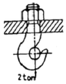
- M30
- M38
- M45
- M50
(정답률: 27%)
55. 원통커플링에서 원통을 조이는 힘을 P라 하면 이 마찰 커플링의 전달 토크는? (단, 마찰계수는 μ, 축의 지름을 d, 축과 원통의 접촉길이(커플링의 길이)를 L로 한다.)
- T=μπPd
- T=2μπPd
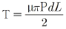
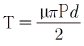
(정답률: 29%)
56. 연강의 응력-변형률 선도에서 후크의 법칙(Hook's law)이 성립하는 구간으로 알맞은 것은?
- 항복점
- 극한강도
- 비례한도
- 소성변형
(정답률: 35%)
57. 지름 50mm의 연강축을 사용하여 350rpm으로 40kw을 전달할 묻힘 키의 길이는 최소 몇 mm이상인가? (단, 키 재료의 허용전단응력은 5kgf/mm2, 키의 폭과 높이는 b×h=15mm×10mm이며 전단저항만 고려한다.)
- 38
- 46
- 60
- 78
(정답률: 34%)
58. 스프링의 변형에 대한 강성을 나타내는 것이 스트링 상수가 있다. 하중이 W[kgf]일 때 변위량을 δ[mm]라 하면 스프링상수 k[kgf/mm]는?
- k=δ/W
- k=δ W
- k=W/δ
- k=W-δ
(정답률: 63%)
59. 지름 20mm, 길이 500mm인 탄소강재에 인장하중이 작용하여 길이가 502mm가 되었다면 변형률은?
- 0.01
- 1.004
- 0.02
- 0.004
(정답률: 39%)
60. 역류를 방지하며 유체를 한쪽 방향으로만 흘러가게 하는 밸브(valve)로 적합한 것은?
- 체크 밸브
- 감압 밸브
- 시퀀스 밸브
- 언로드 밸브
(정답률: 78%)
4과목: 컴퓨터응용설계
61. CAD 시스템을 구성하여 운영할 때 각각의 단위 별로 구성된 자료를 근거리에서 저렴하고 효율적으로 관리하기 위한 시스템 구성 방식으로 적당한 것은?
- 각각의 단위를 Modem을 이용하여 구성한다.
- 각각의 단위를 FAX를 이용하여 구성한다.
- 각각의 단위를 Teletype를 이용하여 구성한다.
- 각각의 단위를 LAN을 이용하여 구성한다.
(정답률: 67%)
62. 다음 중 CAD 시스템의 입력장치로 볼 수 없는 것은?
- 키보드
- 마우스
- 플로터
- 스캐너
(정답률: 81%)
63. 그림과 같이 평면상의 두 벡터
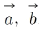
로 이루어진 평행 사변형의 넓이를 구하는 식으로 맞는 것은?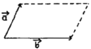
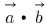
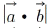
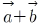
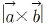
(정답률: 61%)
64. 곡면을 모델링하는 방식 중 4개의 경계곡선을 선형보간하여 형성되는 곡면은 무엇인가?
- 로프트(Loft) 곡면
- 쿤스(Coon's) 곡면
- 스윕(Sweep) 곡면
- 회전(Revolve) 곡면
(정답률: 80%)
65. 속도가 빠른 중앙처리 장치(CPU)와 이에 비하여 상대적으로 속도가 느린 주기억장치 사이에서 원활한 정보의 교환을 위하여 주기억 장치의 정보를 일시적으로 저장하는 기능을 가진 것은?
- cache memory
- coprocessor
- BIOS(Basic Input Output System)
- channel
(정답률: 72%)
66. CAD 소프트웨어가 갖추고 있는 그래픽 소프트웨어 모듈의 종류가 아닌 것은?
- 서류화 모듈
- 그래픽 모듈
- 해석 모듈
- 외주제작 모듈
(정답률: 58%)
67. 원뿔은 임의 평면으로 교차시킨 경우에 구성되는 원추곡선이 아닌 것은?
- B-스플라인(B-spline) 곡선
- 원(circle)
- 타원(ellipse)
- 포물선(parabola)
(정답률: 72%)
68. 평면 좌표계에서 두 점(P1)(x1, y1), P2(x2, y2)을 알고 있을 때 두점을 지나는 직선의 방정식을 바르게 표현한 것은?
- (x2-x1)(y-y1)=(y2-y1)(x-x1)
- (y2-x1)(y-y2)=(x2-y1)(x-x1)
- (x-y2)(y1-x2)=(x2-y1)(y-x1)
- (x2-x1)(x-x1)=(y2-y1)(y-y1)QW
(정답률: 56%)
69. 다음은 Surface modeling(서피스 모델링)으로 구성한 모델의 일반적인 특징으로 틀린 것은?
- 은선 제거가 쉽다.
- NC 데이터를 생성할 수가 있다.
- 단면도의 작성이 가능하다.
- 체적, 관성모멘트 등 물리적 성질의 계산이 가능하다.
(정답률: 74%)
70. 컴퓨터간의 정보 교환을 보다 향상시키기 위해 사용하는 네트워크 기술에서의 통신규약을 무엇이라 하는가?
- PROTOCOL
- PARITY
- PROGRAM
- PROCESS
(정답률: 66%)
71. 기하학적 형상을 나타내는 3가지 방법 중 점, 선, 원 등을 포함한 곡선만으로 3차원 형상을 나타내는 방법을 무엇이라 하는가?
- 와이어프레인 모델링(Wireframe modeling)
- 서피스 모델링(Surface modeling)
- 솔리드 모델링(Solid modeling)
- 커브 모델링(Curve modeling)
(정답률: 78%)
72. CAD 시스템의 하드웨어 중에서 마이크로 필름에 출력하는 장치는?
- X-Y 플로터
- COM
- 레이저 프린터
- 스캐너
(정답률: 43%)
73. 2차원에서의 변환 행렬은 다음과 같이 쓸 수 있다. 다음 중 변환 행렬 TH에서 이동(translation)변환에 직접적으로 관계되는 것은?
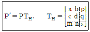
- a, b
- p, q
- c, d
- m, n
(정답률: 67%)
74. 8비트 ASCII코드는 몇 개의 패리티비트를 사용하는가?
- 1개
- 2개
- 3개
- 4개
(정답률: 51%)
75. 칼라 래스터 스캔 디스플레이에서 기본이 되는 3색이 아닌 것은?
- 적색(R)
- 황색(Y)
- 청색(B)
- 녹색(G)
(정답률: 79%)
76. 2차원 컴퓨터 그래픽스의 Window/Viewport 변화를 위해 반드시 필요한 것이 아닌 것은?
- Window 중심점의 좌표
- Viewport 중심점의 좌표
- X 및 Y 방향의 변환각도
- X 및 Y 방향의 축척
(정답률: 44%)
77. 다음은 베지어(Bezier) 곡선에 대한 설명이다. 틀린 것은?
- 다각형 꼭짓점의 순서를 거꾸로 하여 곡선을 생성하여도 같은 곡선이어야 한다.
- 반드시 주어진 시작점과 끝점을 통과한다.
- 하나의 조정점 변경이 곡선 전체에 영향을 준다.
- 2개 이상의 연속된 점들을 직선으로 연결하여 나타낸 것이다.
(정답률: 48%)
78. 다음과 같은 2차원 동차좌표 변환행렬이 수행하는 변환은?
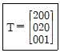
- 이동
- 회전
- 확대
- 대칭
(정답률: 55%)
79. 이미 정의된 두 개 이상의 곡면을 부드럽게 연결되게 하는 곡면 처리를 무엇이라 하는가?
- 블랜딩(blending)
- 셰이딩(shading)
- 스키닝(skinning)
- 리드로잉(redrawing)
(정답률: 80%)
80. 컴퓨터 하드웨어 구성요소 가운데 수학적 논리적으로 데이터를 계산 수행하는 곳으로 사칙연산 및 비교하는 일을 수행하는 부분은?
- 입력장치
- 연산 및 논리장치
- 제어장치
- 출력장치
(정답률: 74%)